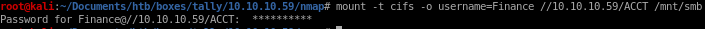

mounting smb account share
step 1: make an smb directory in our attack machine's /mnt folder
Mount example:
sudo mount -t cifs -o "domain=MYDOMAIN,username=MyUserName,password=myPas$werd,sec=ntlm" //<your windows host ip>/<your remote share name> /mnt/my_mount_dir
mount -t cifs -o username=Finance //10.10.10.59/ACCT /mnt/smb
our leaked password was Acc0unting

rummaging through the file share, there is a directory named New Folder within the zz_Migration folder which is suspicious as to why it was never named anything specific

tester.exe is the oldest and most peculular looking .exe in the directory, it was hardcoded by the devs and is not a commercial off the shelf executable so lets check it to see if it has any credentials hard coded:
strings tester.exe | grep PWD

there is an SQL Server with user info and a password hardcoded into the .exe!
DRIVER={SQL Server};SERVER=TALLY, 1433;DATABASE=orcharddb;UID=sa;PWD=GWE3V65#6KFH93@4GWTG2G;